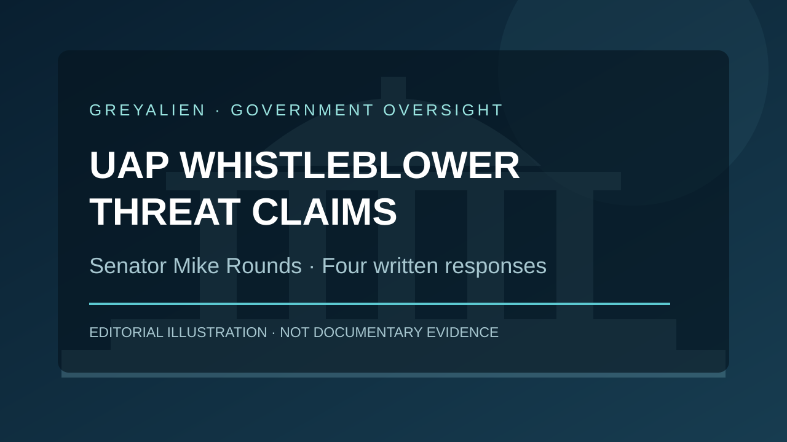

Congressional oversight · October 30, 2026
Senator Mike Rounds Responds to UAP Whistleblower Threat Claims

Investigative journalist Douglas Dean Johnson published four written answers attributed to U.S. Senator Mike Rounds addressing allegations that people considering disclosure of purported secret UAP programs risk violence or assassination. Rounds answered “NO” to each of the four questions. Johnson reports that the answers were transmitted by email through a senior staff member on June 17, 2026; the investigation was published October 30.
What the four responses address
The questions asked whether Rounds had received credible reports of a murder intended to suppress UAP disclosures; had personally affirmed that prospective informants faced direct physical danger; had heard other senators express such a belief; or currently had reason to believe disclosure to authorized bodies exposed people to violence or murder. His reported response to each was “NO.” The precise wording of each question and answer is available in the original article.
Why the distinction matters
Claims of professional retaliation, fear of criminal prosecution for unauthorized disclosure of classified information, and allegations of extrajudicial violence are different propositions requiring different evidence. Rounds's answers describe his stated knowledge and position; they do not prove that no individual has ever experienced a threat or professional retaliation.
Context and competing interpretations
Johnson examines an April 2026 Sol Foundation policy briefing by Kirk McConnell about protections and restitution for potential UAP whistleblowers. The investigation also revisits remarks by Kirsten Gillibrand and Marco Rubio about fears conveyed to them by potential informants. Reporting another person's fear does not, by itself, establish the underlying threat. Johnson's assessments of the policy paper and prior interviews are his analysis, not findings of a court or independent inquiry.
Evidence status
The primary documentary contribution is Johnson's published account of an on-the-record exchange with Rounds. GreyAlien has not independently obtained the underlying email correspondence or established the truth or falsity of any separate allegation of retaliation, threats or violence. No accusation against a named individual is adopted as a finding here.
Source and connected research
Douglas Dean Johnson, Mirador, October 30, 2026 — original investigation.
Permanent Research Library record · Sol Foundation · Kirsten Gillibrand · Marco Rubio · UAP Disclosure Act · Whistleblower protections